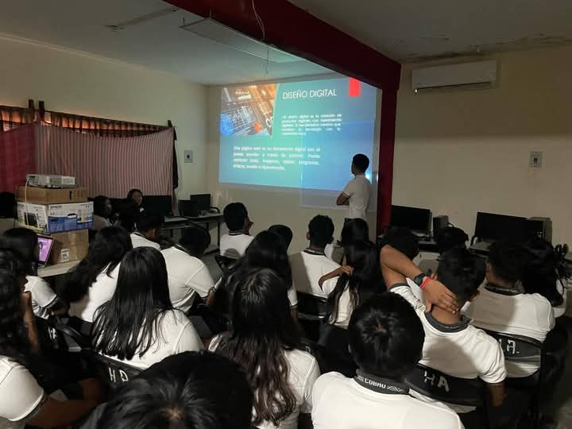

|
|
TIC"S |
| |
 |
La capacitación en TIC (Tecnologías de la Información y Comunicación) en el bachillerato permite a los estudiantes desarrollar competencias profesionales. Esto les será útil en el ámbito laboral.
Ventajas de las TIC en la educación
- Mejoran la concentración y la comprensión
- Estimulan la motivación y el interés de los estudiantes
- Fomentan la flexibilidad y autonomía de los alumnos
- Impulsan el razonamiento crítico
- Agilizan la comunicación entre profesores y alumnos
- Aumentan la productividad en las aulas y el trabajo colaborativo
- Permiten adaptar la enseñanza a las capacidades del alumno
- Facilitan el acceso a la información
- Fomentan las relaciones sociales entre los estudiantes
- Convierten al alumno en un sujeto activo de su proceso de aprendizaje
Las TIC combinan las Tecnologías de la Comunicación (TC) y las Tecnologías de la Información (TI). Entre sus aplicaciones se encuentran:
- Aplicaciones de oficina
- Hardware
- Comunicaciones mediante las redes informáticas
- Desarrollo de sistemas y el software de diseño
- Pizarra digital
- Webs
- Portfolios virtuales
- Plataformas e-centro
- Tutorías virtuales
- Foros virtuales
|
|
|